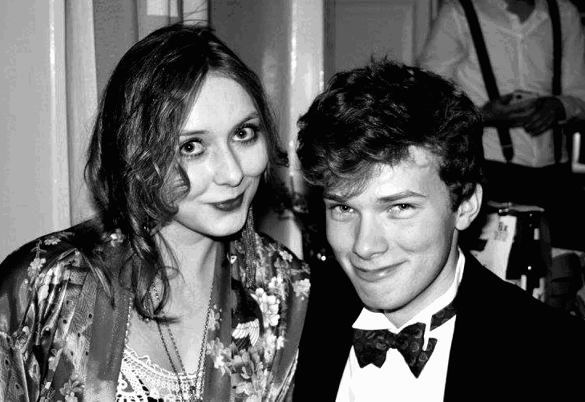

Location
The wedding will be hosted at Koromiko, Frank's family home in Sandycove. The ceremony, the dinner and dancing will all be held on site. The address is:
34 Castlepark road,
Sandycove,
Co. Dublin
A94 PT93
Sandycove,
Co. Dublin
A94 PT93
Please, do not cofuse this address with 34 Castle Park!
Suggested public transport:
Glenageary DART station is a 10 minute walk so it would be best to plan your trip to use the DART if at all possible. The closest hub is Dun Laoghaire which is served by the buses 45a, 46a, 7, 59. The village of Dalkey is a 15 minutes walk from Koromio and is served by the buses 59 and 111.
Glenageary DART station is a 10 minute walk so it would be best to plan your trip to use the DART if at all possible. The closest hub is Dun Laoghaire which is served by the buses 45a, 46a, 7, 59. The village of Dalkey is a 15 minutes walk from Koromio and is served by the buses 59 and 111.
Transport from the airport:
The most convenient way to get to Dun Laoghaire or Dalkey from the airport is the number 703 Aircoach which serves both terminals. Schedules found here
The most convenient way to get to Dun Laoghaire or Dalkey from the airport is the number 703 Aircoach which serves both terminals. Schedules found here
Transport in the Dalkey and Dun Laoghaire area:
You can order taxis with Dalkey Taxi. We would recommend booking in advance if you plan on using a taxi on the day of the wedding. There is also taxi app FreeNow which is the best way of ordering taxis within Dublin (especially if not in the Dalkey area). If you plan on getting a taxi home after the wedding, we would suggest you book it beforehand.
You can order taxis with Dalkey Taxi. We would recommend booking in advance if you plan on using a taxi on the day of the wedding. There is also taxi app FreeNow which is the best way of ordering taxis within Dublin (especially if not in the Dalkey area). If you plan on getting a taxi home after the wedding, we would suggest you book it beforehand.
Day of the wedding
The wedding will be hosted at Koromiko, Frank's family home in Sandycove. There will be ceremony, followed by dinner, and dancing until the wee hours of the morning.
Time
Event
15:00
Guests arrive
15:45
Ceremony
15:45
Champagne and cocktail reception
15:45
Dinner and speeches
15:45
Dancing with a live band followed by a DJ
Please arrive at 15:00
Dress code: Formal
For men, a suit but a tie is not required.
For women, a summery/cocktail dress (or suit if you'd prefer! Men are also welcome to wear dresses). Stilettos are not recommended as there is a lot of grass in the back garden - block heels, wedges or flats would be more suitable.
It could become cold in the evening so a jumper or jacket may come in handy.
If you have a national dress for formal ocassions, we highly encourage you to wear that.
Dinner:
The meal will have a mix of meat and meatless options, as well as gluten free options. If feel you need to flag further dietary restrictions/allergies, please contact Sarah or Frank.
Day after the wedding
The day after the wedding, we invite you to a swim and informal gathering at Koromiko.
Join us for an (optional) swim at the iconic 40-foot in Sandycove beforhand. Afterwards, we will return to Koromiko for lunch and remain there for the afternoon. Exact times will be confirmed closer to the event
Suggested Accommodation
Local Hotels:
Royal Marine Hotel and Haddington House are located on the seafront in Dun Laoghaire.
30 minute walk or two stops on the Dart
FitzPatrick Castle Hotel is in Killiney and a 25 minute walk from Koromiko.
Local Bed & Breakfast:
There are a few smaller BnBs in Dun Laoghaire. The following is by no means an exhaustive list:
Mulgrage Lodge - 47 Mulgrave Street, Dun Laoghaire
Ophira - 10 Corrig Avenue, Dun Laoghaire
City Centre:
Dublin city also has plenty of options. As mentioned, you can get the DART to Glenageary. A taxi home would be necessary after the wedding as the DART service finishes at 23:30.
How to share your photos with us

If you take any photos on the day that you want to share, then please send them to us! We are currently looking at suitable solutions to share easily and will let you know how to do this closer to the date.